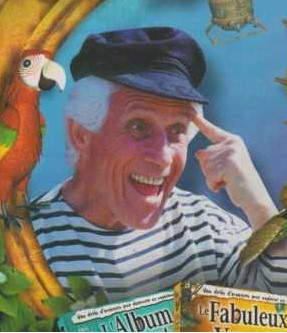
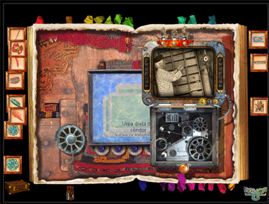

Uncle Albert and why it's weird
Game Context
The Uncle Albert games conform a series developed by lexisnumérique, a french studio, in between 1998 and 2004. They were games developed for children, with an always repeating premise: the player found an album from Uncle Albert, and being told by a recording of Albert himself that it contains some kind of incentive (usually a vaguely defined tresure), s/he is incentivized to solve the puzzles that are spread throughout the album's pages.
Why it's weird...
I first played those games when I was around 10, revisited them at 14, and went back to them at 20. It was in this last occasion, after having formed a solid understanding of design techniques, and with the intent to see why I remembered those games so fondly, that I was positively surprised on a technical level. Anyone with a minimal formation on videogames is aware of the concept of "game loops", and how it is a very dominant structure to base the media's experience around: a system, a series of mechanics, a set of options, a basic unit of play is presented to the player, and once they have experienced it, they repeat it in escalating progression until a conclusion is reached, or ad infinitum, depending on the game. The classic RPG example: you get equipment, go kill monsters (to gain money and experience), return to the safe area to make use of said gains. In tactical games, you move your units, you opponent does the proper, and the turn goes back to you. And of course, game loops can be considered from different perspectives: it is not uncommon to separate short - medium - long term loops, to have multiple progression lines that keep a game's inertia, distributing tasks by their desired cadence or by how much it fatigues the player.
Very tied to this idea of game loops are fixed mechanics: you are introduced into what you can do, and progressing it's up to how effectively you can use the given tools. New mechanics might
be added in the future, but they usually serve to complement or expand the game's basis. In Celeste, you jump, dash and climb; in Portal, you jump, grab things and create portals; etc.
It's simple, clear, an easy excuse for developing mastery, a great fit for quick characterization, and very importantly, prevents teams from overshooting their scope and ending up with feature-creep. It is here were
the Uncle Albert series shines. Those games are controlled entirely with the mouse, so your options are limited to click, drag and hover. They were games made for children, after
all, and maybe that would explain why the mechanical performance has very low requirements; the engagement, instead, comes from the cognitive skills it demands.
While many games stick their mechanics into a constantly repeating loop that automatizes the decision-making, reducing the player's agent participation and making a series of interesting choices into a formality, Uncle Albert is constantly asking and testing a plethora of skills in different circumstances, never settling down, managing to stay fresh during all the experience. In this sense, it resembles what I pointed out in my Dark Souls level design analysis, that the game (especially early on) filled the environment with useful gimmicks to keep the player alert and thinking, providing the tools to surpass the game's "difficulty" if they were willing to think out of the box instead of hitting their head against the wall until it broke. Or both did.
... and why it works
Novelty for the sake of novelty isn't a guarantee of success. Many modern Sonic games suffer from implementing tons of playability, but never polishing them enough. In other ocasions, a gimmick can end up being better than the majority of the game, leaving a feeling of disappointment when it is left behind. There can even be cases in which a vast range of mechanics makes the gameplay convoluted, uninteresting due to the discovery of first-order optimal strategies, or because some tools are only useful situationally, leading to the aforementioned problem of pipelining player choice (classic enemy that has to be defeated using that generally useless mechanic).
In my opinion, Uncle Ernest works because of two factors: focus and contextualization. I already mentioned what the game is about, and how it focuses on cognitive challenges to solve Albert's conundrums. How they are presented is very revealing, though: the interface is literally the Album. Each "level" is found in each page, accessible by unique tabs, which are unlocked as previous levels are completed. Here are some of the challenges the player might encounter in said pages:
- Retrieve specific photos to unlock a strongbox (image on the left)
- Identify the sequence of notes in a song
- Navigate a river by the power of physics
- Play peruvian basketball with a scorpion
- Remain patient to take a photo at the right moment
- Navigate a submarine
- Decipher an ancient pictoric code
And the only thing those elements have in common is that they are performed with the mouse. The player never feels like they are using distinct mechanics, but keep having novel experiences, because the game demands use of many differentiated skills, all of which are a natural constant in human behavior. Because "thinking" is visualized as an action that is always performed the same way, no matter what actual parts of the brain we are using, the backlash of "performing X was more engaging than Y" is greatly reduced. Similarly, the clarity and simplicity of fixed mechanics is still kept, because few things come as easily as using our noggin, in all its different facets. Additionally, as a result of such a simple control scheme, it seems unlikely that the game required an excessive amount of work to generate all the diversity they have to offer (this is also true beacuse many assets were re-used from game to game, like the always useful ladybug), suggesting that this kind of design approach is not out of scope.
All these interesting challenges are then perfectly contextualized with the album setting, establishing a mindset that invisibly guides the player, among the many smart tricks of the developers to teach them how to play and thrive. In fact, this game does many things very well, from difficulty regulation to free-form progression, and is so committed to its premise that is hard for me to define it in terms of game genres. This remark, in fact, comes from a design rant that I couldn't recover, and in which I went more in detail on how the game puts itself together, and more importantly, how it focuses on creating a unique, personal experience instead of just pew-pew fun. In a sense, it does something similar to The Room games, blending a unique premise that is interesting by itself, but which also reinforces the gameplay.
In any case, if there is any conclusion I would like to underline for this remark, would be the importance of not getting stuck in iterating fixed mechanics in game loops, that there is much more beyond what they can offer: as many others, they are a tool to keep in mind in the design process, but they should never undermine the value of the experience we want to deliver to the player. This is also closely tied to how genre conventions can be detrimental: while player expectations are important, a game should not be built to accomodate it into a general template, but instead, take the decisions best suited to fulfill its ideal experience, and create expectations based on the final result.
How to play this series: suggesting a bad idea
For the sake of brevity, I deliberately kept many aspects of the game unmentioned, and as it should be evident, hardly could I transmit the genius of these games with a short comment on them. The logical step, then, would be to
encourage everyone to go play them, right? ... Where do I begin. First of all, they are games for children. They are genius in design, but their execution can feel lacking. Secondly, those are +15 year old games, developed by an
almost unheard french studio, and while they were licensed and translated in other countries... Coming across them isn't exactly the easiest. It will be most probable that underhanded methods will be needed to acquire a copy. Thirdly, and
this is my favorite.
My parents purchased me two of the series' games when I was a child, but with only one functioning, I ended up getting three of them from the web. Even the one I had bought at the store didn't work
properly on my current (relatively) high-specs PC (not that it did work flawlessly when I played them on 2012 or so). So if you want to play, buckle up, because you would probably need to download a virtual operating system, bypass
the CD detection error, and somehow getting al the software necessary to make the game work. Needless to say that finding decent quality playthroughs of the game is... not a thing. As I mentioned, The Room series works in a similar vein, so I would
probably recommend to go pick them up (even if for my taste, Uncle Albert does a more interesting presentation and diversity of challenges), but if you ever come across Uncle Albert... Give him a try, see where it gets you.